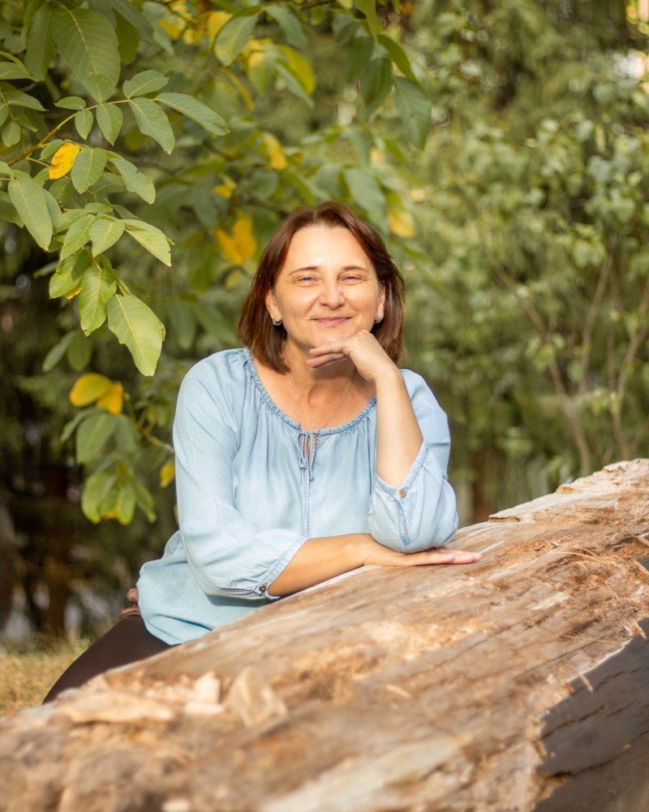

<HTML></HTML>
<!DOCTYPE html>
<html lang="sk">
<head>
  <meta charset="UTF-8">
  <meta name="viewport" content="width=device-width, initial-scale=1.0">
  <title>Môj Web</title>
  <!-- Tailwind CSS: štýly pre dizajn načítané priamo z internetu -->
  <script src="https://cdn.tailwindcss.com"></script>
</head>
<body class="bg-white text-gray-900">

  <!-- SEM BUDEME VKLADAŤ KÓD OD CLAUDEA -->
<!-- ZÁKLADNÁ KOSTRA START -->
<!DOCTYPE html>
<html lang="sk">
<head>
  <meta charset="UTF-8">
  <meta name="viewport" content="width=device-width, initial-scale=1.0">
  <title>Rodinná poradňa od A po Z</title>

  <!-- FONT START -->
  <link rel="preconnect" href="https://fonts.googleapis.com">
  <link rel="preconnect" href="https://fonts.gstatic.com" crossorigin>
  <link href="https://fonts.googleapis.com/css2?family=Crimson+Pro:ital,wght@0,200..900;1,200..900&family=Vujahday+Script&display=swap" rel="stylesheet">
  <style>
    body { font-family: 'Crimson Pro', serif; }
    .font-script { font-family: 'Vujahday Script', cursive; }
  </style>
  <!-- FONT END -->

  <!-- Tailwind CSS -->
  <script src="https://cdn.tailwindcss.com"></script>
  <script>
    tailwind.config = {
      theme: {
        extend: {
          colors: {
            primary:   { 500: '#3D2217' },
            secondary: { 500: '#F0E9D5' },
            neutral:   { 500: '#764B2A', 600: '#6B4426' },
            accent:    { 500: '#F1D1E7', 600: '#DBBED2' },
            tertiary:  { 300: '#DEE1B7', 500: '#B8BA87' },
            yellow:    { 50: '#FDEDD3', 500: '#F5AA33' }
          }
        }
      }
    }
  </script>

  <!-- Lucide ikony -->
  <script src="https://unpkg.com/lucide@latest"></script>
    <!-- ZRNITÁ TEXTÚRA START -->
  <style>
    .grain { position: relative; isolation: isolate; }
    .grain::after {
      content: ""; position: absolute; inset: 0; z-index: -1; pointer-events: none; border-radius: inherit;
      background-image: url("data:image/svg+xml,%3Csvg xmlns='http://www.w3.org/2000/svg' width='240' height='240'%3E%3Cfilter id='n' x='0' y='0' width='100%25' height='100%25' color-interpolation-filters='sRGB'%3E%3CfeTurbulence type='fractalNoise' baseFrequency='0.5' numOctaves='3' stitchTiles='stitch' seed='3585'/%3E%3CfeColorMatrix type='luminanceToAlpha' result='a'/%3E%3CfeComponentTransfer in='a' result='m1'%3E%3CfeFuncA type='discrete' tableValues='0 0 0 0 0 0 0 0 0 0 0 0 0 0 0 0 1 1 1 1 1 1 1 1 1 1 1 1 1 1 1 1 1 1 0 0 0 0 0 0 0 0 0 0 0 0 0 0 0 0 0 0 0 0 0 0 0 0 0 0 0 0 0 0 0 0 0 0 0 0 0 0 0 0 0 0 0 0 0 0 0 0 0 0 0 0 0 0 0 0 0 0 0 0 0 0 0 0 0 0'/%3E%3C/feComponentTransfer%3E%3CfeComponentTransfer in='a' result='m2'%3E%3CfeFuncA type='discrete' tableValues='0 0 0 0 0 0 0 0 0 0 0 0 0 0 0 0 0 0 0 0 0 0 0 0 0 0 0 0 0 0 0 0 0 0 0 0 0 0 0 0 0 0 0 0 0 0 0 0 0 0 0 0 0 0 0 0 0 0 0 0 0 0 0 0 0 0 1 1 1 1 1 1 1 1 1 1 1 1 1 1 1 1 1 1 0 0 0 0 0 0 0 0 0 0 0 0 0 0 0 0'/%3E%3C/feComponentTransfer%3E%3CfeFlood flood-color='rgb(194,116,78)' flood-opacity='0.2'/%3E%3CfeComposite in2='m1' operator='in' result='c1'/%3E%3CfeFlood flood-color='rgb(118,75,42)' flood-opacity='0.04'/%3E%3CfeComposite in2='m2' operator='in' result='c2'/%3E%3CfeMerge%3E%3CfeMergeNode in='c1'/%3E%3CfeMergeNode in='c2'/%3E%3C/feMerge%3E%3C/filter%3E%3Crect width='100%25' height='100%25' filter='url(%23n)'/%3E%3C/svg%3E");
    }
  </style>
  <!-- ZRNITÁ TEXTÚRA END -->
</head>
<body class="bg-secondary-500 text-primary-500 font-serif antialiased">

  <!-- HEADER START -->
<header class="sticky top-0 z-50 bg-secondary-500">
  <div class="h-16 md:h-20 lg:h-[82px] px-5 md:px-8 lg:pl-16 lg:pr-[72px] flex items-center justify-between">

    <!-- Logo -->
    <a href="#" class="italic text-lg lg:text-[22.5px] lg:-mt-1.5 text-primary-500">Rodinná poradňa od A po Z</a>

    <!-- Menu pre PC -->
    <nav class="hidden lg:flex items-center gap-[34px] text-base text-primary-500">
      <a href="#o-mne" class="hover:text-neutral-500 transition">O mne</a>
      <a href="#sluzby" class="hover:text-neutral-500 transition">Služby</a>
      <a href="#ako-sa-stretneme" class="hover:text-neutral-500 transition">Ako sa stretneme</a>
      <a href="#prax" class="hover:text-neutral-500 transition">Prax a vzdelanie</a>
      <a href="#kontakt" class="hover:text-neutral-500 transition">Kontakt</a>
    </nav>

    <!-- Hamburger pre mobil a tablet -->
    <button id="menu-open" class="lg:hidden p-2 -mr-2 text-primary-500" aria-label="Otvoriť menu">
      <i data-lucide="menu" class="w-6 h-6 stroke-[1.5]"></i>
    </button>
  </div>

  <!-- Mobilné menu (celá obrazovka) -->
  <div id="mobile-menu" class="fixed inset-0 bg-secondary-500 hidden flex-col lg:hidden">
    <div class="h-16 md:h-20 px-5 md:px-8 flex items-center justify-between">
      <span class="italic text-lg text-primary-500">Rodinná poradňa od A po Z</span>
      <button id="menu-close" class="p-2 -mr-2 text-primary-500" aria-label="Zavrieť menu">
        <i data-lucide="x" class="w-6 h-6 stroke-[1.5]"></i>
      </button>
    </div>
    <nav class="flex-1 flex flex-col items-center justify-center gap-8 text-xl text-primary-500">
      <a href="#o-mne" class="menu-link">O mne</a>
      <a href="#sluzby" class="menu-link">Služby</a>
      <a href="#ako-sa-stretneme" class="menu-link">Ako sa stretneme</a>
      <a href="#prax" class="menu-link">Prax a vzdelanie</a>
      <a href="#kontakt" class="menu-link">Kontakt</a>
    </nav>
  </div>
</header>

<script>
  const menu = document.getElementById('mobile-menu');
  document.getElementById('menu-open').onclick = () => { menu.classList.remove('hidden'); menu.classList.add('flex'); };
  const closeMenu = () => { menu.classList.add('hidden'); menu.classList.remove('flex'); };
  document.getElementById('menu-close').onclick = closeMenu;
  document.querySelectorAll('.menu-link').forEach(a => a.onclick = closeMenu);
</script>
<!-- HEADER END -->

  <!-- SEM BUDEME VKLADAŤ ĎALŠIE SEKCIE (hero, služby, ...) -->
<!-- HERO SEKCIA START -->
<section id="o-mne" class="grid lg:grid-cols-[724fr_716fr] lg:h-[794px] bg-secondary-500">

  <!-- Text -->
  <div class="flex justify-center px-5 md:px-12 lg:px-0 lg:pl-[29px] pt-14 md:pt-20 lg:pt-[101px] pb-16 md:pb-20 lg:pb-0">
    <div class="relative w-full max-w-[540px] flex flex-col items-center text-center">

      <h1 class="text-primary-500 font-light text-[44px] md:text-[64px] lg:text-[80px] leading-[1.1] tracking-[-0.03em]">
        Sprevádzam rodiny náročnými obdobiami
      </h1>

      <p class="mt-6 lg:mt-8 text-neutral-500 font-light text-lg lg:text-xl leading-[1.3] lg:leading-[1.3]">
        Som Adriana Záskalanová, mama štyroch detí a k tomu psychologička, rodinná poradkyňa aj koučka.
        Už 25 rokov som pri rodinách – od prvej myšlienky na bábätko až po dospievanie.
      </p>

      <a href="#kontakt"
         class="mt-8 lg:mt-10 inline-flex items-center gap-2 h-[46px] px-6 rounded-full bg-primary-500 text-secondary-500 italic text-base shadow-[2px_2px_6px_rgba(0,0,0,0.02)] hover:bg-neutral-500 transition">
        Napíšte mi
        <svg width="13" height="8" viewBox="408 617 13 8" fill="currentColor" aria-hidden="true"><path d="M420.354 621.211C420.549 621.016 420.549 620.699 420.354 620.504L417.172 617.322C416.976 617.127 416.66 617.127 416.464 617.322C416.269 617.517 416.269 617.834 416.464 618.029L419.293 620.858L416.464 623.686C416.269 623.881 416.269 624.198 416.464 624.393C416.66 624.588 416.976 624.588 417.172 624.393L420.354 621.211ZM408 620.858V621.358H420V620.858V620.358H408V620.858Z"/></svg>
      </a>

      <!-- Ručne písaný text -->
      <p class="font-script text-neutral-500 text-2xl leading-[1.3] text-left self-start mt-12 lg:mt-0 lg:absolute lg:left-[7px] lg:top-[536px] -rotate-[11deg] origin-top-left">
        Online a v okolí<br>Banskej Bystrice
      </p>
    </div>
  </div>

  <!-- Fotka -->
  <div class="h-[420px] md:h-[560px] lg:h-full">
    
  </div>

</section>
<!-- HERO SEKCIA END -->
 <!-- SLUŽBY SEKCIA START -->
<section id="sluzby" class="grain bg-neutral-500 text-secondary-500 shadow-[2px_2px_4px_rgba(0,0,0,0.03)]">
  <div class="max-w-[1090px] mx-auto px-5 md:px-8 lg:px-0 pt-16 md:pt-20 lg:pt-[88px] pb-16 md:pb-20 lg:pb-[88px]">

    <div class="grid lg:grid-cols-[1fr_535px] gap-10 lg:gap-0">

      <!-- Úvod -->
      <div>
        <h2 class="font-light text-[44px] md:text-[56px] lg:text-[64px] leading-[1.1] tracking-[-0.02em] lg:-mt-0.5">
          S čím <em class="italic">pomáham</em>
        </h2>
        <p class="mt-3 font-light text-lg lg:text-xl leading-[1.3] lg:leading-[1.3] max-w-[430px]">
          Nemusíte presne vedieť, čo potrebujete. Spoznajte, čo je vám blízke – a napíšte mi.
        </p>
        <a href="#kontakt"
           class="grain mt-8 lg:mt-10 inline-flex items-center gap-2 h-[46px] px-6 rounded-full bg-secondary-500 text-primary-500 italic text-base shadow-[2px_2px_6px_rgba(0,0,0,0.02)] hover:bg-yellow-50 transition">
          Objednať konzultáciu
          <svg width="13" height="8" viewBox="408 617 13 8" fill="currentColor" aria-hidden="true"><path d="M420.354 621.211C420.549 621.016 420.549 620.699 420.354 620.504L417.172 617.322C416.976 617.127 416.66 617.127 416.464 617.322C416.269 617.517 416.269 617.834 416.464 618.029L419.293 620.858L416.464 623.686C416.269 623.881 416.269 624.198 416.464 624.393C416.66 624.588 416.976 624.588 417.172 624.393L420.354 621.211ZM408 620.858V621.358H420V620.858V620.358H408V620.858Z"/></svg>
        </a>
      </div>

      <!-- Rozbaľovacie karty -->
      <div class="flex flex-col gap-4">

        <details class="group grain rounded-2xl bg-accent-500 text-neutral-500 shadow-[2px_2px_4px_rgba(0,0,0,0.03)] hover:bg-accent-600 open:hover:bg-accent-500 transition-colors">
          <summary class="flex items-center justify-between gap-4 min-h-[70px] px-6 cursor-pointer list-none [&::-webkit-details-marker]:hidden">
            <span class="text-2xl lg:text-[30px] leading-[1.1]">Máme bábätko</span>
            <i data-lucide="plus" class="w-6 h-6 shrink-0 stroke-[1.5] group-open:hidden"></i>
            <i data-lucide="minus" class="w-6 h-6 shrink-0 stroke-[1.5] hidden group-open:block"></i>
          </summary>
          <div class="px-6 pb-6">
            <p class="font-light text-lg lg:text-xl leading-[1.4] lg:leading-[1.4]">
              Dieťatko milujete a zároveň máte pocit, že ste za posledné mesiace zmizli? Že už neviete, kto ste, keď nie ste mama alebo ocko?
              To sa hovorí ťažko – nahlas ešte ťažšie. Prídem za vami domov alebo sa spojíme online. Bez kočíka a bez cestovania.
            </p>
            <div class="mt-4 flex flex-wrap gap-2">
              <span class="bg-yellow-50 rounded px-2 py-0.5 text-base">Som dobrá mama?</span>
              <span class="bg-yellow-50 rounded px-2 py-0.5 text-base">Rodičovské vyhorenie</span>
              <span class="bg-yellow-50 rounded px-2 py-0.5 text-base">Emócie po pôrode</span>
            </div>
          </div>
        </details>

        <details class="group grain rounded-2xl bg-accent-500 text-neutral-500 shadow-[2px_2px_4px_rgba(0,0,0,0.03)] hover:bg-accent-600 open:hover:bg-accent-500 transition-colors">
          <summary class="flex items-center justify-between gap-4 min-h-[70px] px-6 cursor-pointer list-none [&::-webkit-details-marker]:hidden">
            <span class="text-2xl lg:text-[30px] leading-[1.1]">Škola nám robí starosti</span>
            <i data-lucide="plus" class="w-6 h-6 shrink-0 stroke-[1.5] group-open:hidden"></i>
            <i data-lucide="minus" class="w-6 h-6 shrink-0 stroke-[1.5] hidden group-open:block"></i>
          </summary>
          <div class="px-6 pb-6">
            <p class="font-light text-lg lg:text-xl leading-[1.4] lg:leading-[1.4]">TEXT DOPLNIŤ</p>
            <div class="mt-4 flex flex-wrap gap-2">
              <span class="bg-yellow-50 rounded px-2 py-0.5 text-base">Štítok</span>
            </div>
          </div>
        </details>

        <details class="group grain rounded-2xl bg-accent-500 text-neutral-500 shadow-[2px_2px_4px_rgba(0,0,0,0.03)] hover:bg-accent-600 open:hover:bg-accent-500 transition-colors">
          <summary class="flex items-center justify-between gap-4 min-h-[70px] px-6 cursor-pointer list-none [&::-webkit-details-marker]:hidden">
            <span class="text-2xl lg:text-[30px] leading-[1.1]">Rozvádzame sa</span>
            <i data-lucide="plus" class="w-6 h-6 shrink-0 stroke-[1.5] group-open:hidden"></i>
            <i data-lucide="minus" class="w-6 h-6 shrink-0 stroke-[1.5] hidden group-open:block"></i>
          </summary>
          <div class="px-6 pb-6">
            <p class="font-light text-lg lg:text-xl leading-[1.4] lg:leading-[1.4]">TEXT DOPLNIŤ</p>
            <div class="mt-4 flex flex-wrap gap-2">
              <span class="bg-yellow-50 rounded px-2 py-0.5 text-base">Štítok</span>
            </div>
          </div>
        </details>

        <details class="group grain rounded-2xl bg-accent-500 text-neutral-500 shadow-[2px_2px_4px_rgba(0,0,0,0.03)] hover:bg-accent-600 open:hover:bg-accent-500 transition-colors">
          <summary class="flex items-center justify-between gap-4 min-h-[70px] px-6 cursor-pointer list-none [&::-webkit-details-marker]:hidden">
            <span class="text-2xl lg:text-[30px] leading-[1.1]">Doma je stále dusno</span>
            <i data-lucide="plus" class="w-6 h-6 shrink-0 stroke-[1.5] group-open:hidden"></i>
            <i data-lucide="minus" class="w-6 h-6 shrink-0 stroke-[1.5] hidden group-open:block"></i>
          </summary>
          <div class="px-6 pb-6">
            <p class="font-light text-lg lg:text-xl leading-[1.4] lg:leading-[1.4]">TEXT DOPLNIŤ</p>
            <div class="mt-4 flex flex-wrap gap-2">
              <span class="bg-yellow-50 rounded px-2 py-0.5 text-base">Štítok</span>
            </div>
          </div>
        </details>

        <details class="group grain rounded-2xl bg-accent-500 text-neutral-500 shadow-[2px_2px_4px_rgba(0,0,0,0.03)] hover:bg-accent-600 open:hover:bg-accent-500 transition-colors">
          <summary class="flex items-center justify-between gap-4 min-h-[70px] px-6 cursor-pointer list-none [&::-webkit-details-marker]:hidden">
            <span class="text-2xl lg:text-[30px] leading-[1.1]">Naše dieťa sa trápi</span>
            <i data-lucide="plus" class="w-6 h-6 shrink-0 stroke-[1.5] group-open:hidden"></i>
            <i data-lucide="minus" class="w-6 h-6 shrink-0 stroke-[1.5] hidden group-open:block"></i>
          </summary>
          <div class="px-6 pb-6">
            <p class="font-light text-lg lg:text-xl leading-[1.4] lg:leading-[1.4]">TEXT DOPLNIŤ</p>
            <div class="mt-4 flex flex-wrap gap-2">
              <span class="bg-yellow-50 rounded px-2 py-0.5 text-base">Štítok</span>
            </div>
          </div>
        </details>

        <details class="group grain rounded-2xl bg-accent-500 text-neutral-500 shadow-[2px_2px_4px_rgba(0,0,0,0.03)] hover:bg-accent-600 open:hover:bg-accent-500 transition-colors">
          <summary class="flex items-center justify-between gap-4 min-h-[70px] px-6 cursor-pointer list-none [&::-webkit-details-marker]:hidden">
            <span class="text-2xl lg:text-[30px] leading-[1.1]">Dospieva nám</span>
            <i data-lucide="plus" class="w-6 h-6 shrink-0 stroke-[1.5] group-open:hidden"></i>
            <i data-lucide="minus" class="w-6 h-6 shrink-0 stroke-[1.5] hidden group-open:block"></i>
          </summary>
          <div class="px-6 pb-6">
            <p class="font-light text-lg lg:text-xl leading-[1.4] lg:leading-[1.4]">TEXT DOPLNIŤ</p>
            <div class="mt-4 flex flex-wrap gap-2">
              <span class="bg-yellow-50 rounded px-2 py-0.5 text-base">Štítok</span>
            </div>
          </div>
        </details>

      </div>
    </div>

    <!-- Spolupracujem -->
    <div class="mt-16 lg:mt-[91px] max-w-[520px]">
      <h3 class="font-light text-[32px] lg:text-[36px] leading-[1.1] tracking-[-0.03em]">Spolupracujem</h3>
      <p class="mt-4 lg:mt-6 font-light text-lg lg:text-xl leading-[1.3] lg:leading-[1.3]">
        Spolupracujem s klinickým psychológom a psychoterapeutom
        <a href="https://www.bbpsycholog.sk/index.php" target="_blank" rel="noopener" class="italic underline underline-offset-2 hover:text-accent-500 transition">Jánom Záskalanom</a>.
        Ak budete potrebovať niečo, čo neponúkam – napríklad párovú terapiu – odporučím vás jemu.
      </p>
    </div>

  </div>
</section>
<!-- SLUŽBY SEKCIA END -->
 <!-- O MNE SEKCIA START -->
<section id="prax" class="bg-secondary-500 text-primary-500">
  <div class="max-w-[1090px] mx-auto px-5 md:px-8 lg:px-0 pt-20 md:pt-24 lg:pt-[154px] pb-16 md:pb-20 lg:pb-[82px]">
    <div class="grid lg:grid-cols-[1fr_535px] items-center gap-12 lg:gap-0">

      <!-- Fotka -->
      <div class="lg:pl-px">
        
      </div>

      <!-- Text -->
      <div class="relative">
        <p class="font-script text-neutral-500 text-2xl inline-block mb-4 lg:mb-0 lg:absolute lg:-top-[42px] lg:-left-[31px] -rotate-[9deg] origin-top-left whitespace-nowrap">
          Niečo málo o mne
        </p>

        <h2 class="font-light text-[44px] md:text-[56px] lg:text-[64px] leading-[1.05] lg:leading-none tracking-[-0.02em]">
          Rodičovstvo poznám<br>z <em class="italic">oboch</em> strán
        </h2>

        <div class="mt-6 max-w-[526px] space-y-6 font-light text-lg lg:text-xl leading-[1.3] lg:leading-[1.3]">
          <p>Najprv nás podrobí skúške a až potom naučí pravidlá. Emócie našich detí – aj tie naše vlastné – dôverne poznám nielen z odborných kníh, ale najmä z vlastnej skúsenosti.</p>
          <p>Bola som školskou psychologičkou na základnej a strednej škole, pracovala som s rodinami v rozvodovom konaní aj s deťmi, ktorým sa zrazu svet zdal príliš veľký. Desať rokov som viedla materské centrum a bola pri matkách, ktoré prvýkrát držia bábätko a nevedia, čo teraz. Každé z tých miest ma naučilo niečo iné.</p>
          <p>Moje vzdelanie a vlastné materstvo som spojila do Rodinnej poradne. Nie preto, aby som vám dávala rady. Ale aby ste odišli s tým, že svojej rodine rozumiete o čosi lepšie.</p>
        </div>

        <a href="#"
           class="mt-10 inline-flex items-center gap-2 h-[47px] px-6 rounded-full border border-[#644E45] text-primary-500 italic text-base shadow-[2px_2px_6px_rgba(0,0,0,0.02)] hover:bg-primary-500 hover:text-secondary-500 transition">
          Viac o mojich skúsenostiach
          <svg width="13" height="8" viewBox="408 617 13 8" fill="currentColor" aria-hidden="true"><path d="M420.354 621.211C420.549 621.016 420.549 620.699 420.354 620.504L417.172 617.322C416.976 617.127 416.66 617.127 416.464 617.322C416.269 617.517 416.269 617.834 416.464 618.029L419.293 620.858L416.464 623.686C416.269 623.881 416.269 624.198 416.464 624.393C416.66 624.588 416.976 624.588 417.172 624.393L420.354 621.211ZM408 620.858V621.358H420V620.858V620.358H408V620.858Z"/></svg>
        </a>
      </div>

    </div>
  </div>
</section>
<!-- O MNE SEKCIA END -->
 <!-- STRETNEME SA SEKCIA START -->
<section id="ako-sa-stretneme" class="relative bg-secondary-500 text-primary-500">

  <!-- Vlna -->
  <svg class="block w-full h-[60px] md:h-[100px] lg:h-[136px]" viewBox="0 0 1440 136" preserveAspectRatio="none" aria-hidden="true">
    <defs>
      <filter id="vlna-zrno" x="0" y="0" width="100%" height="100%" color-interpolation-filters="sRGB">
        <feTurbulence type="fractalNoise" baseFrequency="0.5" numOctaves="3" stitchTiles="stitch" seed="3585" result="noise"/>
        <feColorMatrix in="noise" type="luminanceToAlpha" result="a"/>
        <feComponentTransfer in="a" result="m1"><feFuncA type="discrete" tableValues="0 0 0 0 0 0 0 0 0 0 0 0 0 0 0 0 1 1 1 1 1 1 1 1 1 1 1 1 1 1 1 1 1 1 0 0 0 0 0 0 0 0 0 0 0 0 0 0 0 0 0 0 0 0 0 0 0 0 0 0 0 0 0 0 0 0 0 0 0 0 0 0 0 0 0 0 0 0 0 0 0 0 0 0 0 0 0 0 0 0 0 0 0 0 0 0 0 0 0 0"/></feComponentTransfer>
        <feComposite in="m1" in2="SourceGraphic" operator="in" result="m1c"/>
        <feFlood flood-color="rgb(194,116,78)" flood-opacity="0.2"/>
        <feComposite in2="m1c" operator="in" result="c1"/>
        <feMerge><feMergeNode in="SourceGraphic"/><feMergeNode in="c1"/></feMerge>
      </filter>
    </defs>
    <path filter="url(#vlna-zrno)" fill="#B8BA87" d="M355.929 0C623.215 0 809.824 135.43 1060.36 135.43C1196.42 135.43 1333.2 105.56 1440 73.87V136H0L0 52.62C110.975 26.06 247.5 0 355.929 0Z"/>
  </svg>

  <div class="grain bg-tertiary-500 -mt-px overflow-hidden">
    <div class="max-w-[1090px] mx-auto px-5 md:px-8 lg:px-0 pt-6 lg:pt-[1px] pb-20 md:pb-24 lg:pb-[109px]">

      <!-- Nadpis -->
      <h2 class="font-light text-[44px] md:text-[56px] lg:text-[64px] leading-[1.05] lg:leading-none tracking-[-0.02em] lg:-mt-1.5">
        Stretneme sa tam,<br>kde <em class="italic">vám</em> je najlepšie
      </h2>
      <p class="mt-4 lg:mt-[22px] font-light text-lg lg:text-xl leading-[1.3] lg:leading-[1.3] max-w-[520px]">
        Nie každý rozhovor sa dá viesť za stolom. Vyberte si formu, ktorá sadne vášmu dňu.
      </p>

      <!-- Formy stretnutí -->
      <div class="mt-14 lg:mt-[90px] grid md:grid-cols-2 gap-y-12 lg:gap-y-[70px] gap-x-10 lg:gap-x-0">

        <div class="max-w-[420px]">
          <h3 class="inline-block bg-tertiary-300 rounded-sm px-1 text-[28px] lg:text-[30px] leading-[38px]">Online</h3>
          <p class="mt-4 font-light text-lg lg:text-xl leading-[1.3] lg:leading-[1.3]">
            Najčastejšia forma. <strong class="font-bold">Odkiaľkoľvek</strong> na Slovensku aj zo zahraničia – z gauča, spálne či kuchyne.
          </p>
          <div class="hidden mt-4 space-y-4 font-light text-lg lg:text-xl leading-[1.3] lg:leading-[1.3]">
            <p><strong class="font-bold">Dĺžka a cena:</strong> Základné sedenie trvá 60 minút a cena je 60 €. V prípade potreby komplexnejšieho rozboru je možné dĺžku stretnutia po vzájomnej dohode vopred upraviť.</p>
            <p><strong class="font-bold">Platformy:</strong> Konzultácie prebiehajú cez overené videohovory podľa vašich preferencií – Google Meet, WhatsApp alebo Messenger.</p>
            <p><strong class="font-bold">Prostredie:</strong> Pripravte si pokojné miesto, kde sa budete cítiť bezpečne, uvoľnene a kde nebudete počas rozhovoru nikým rušení.</p>
          </div>
          <button type="button" data-more aria-expanded="false" class="group mt-4 inline-flex items-center gap-1.5 font-bold text-base leading-none hover:underline">
            <span class="group-aria-expanded:hidden">Viac informácií</span><span class="hidden group-aria-expanded:inline">Menej informácií</span>
            <i data-lucide="plus" class="w-3 h-3 stroke-[2.5] group-aria-expanded:hidden"></i>
            <i data-lucide="minus" class="w-3 h-3 stroke-[2.5] hidden group-aria-expanded:block"></i>
          </button>
        </div>

        <div class="max-w-[420px]">
          <h3 class="inline-block bg-tertiary-300 rounded-sm px-1 text-[28px] lg:text-[30px] leading-[38px]">U vás doma</h3>
          <p class="mt-4 font-light text-lg lg:text-xl leading-[1.3] lg:leading-[1.3]">
            Prídem za vami do <strong class="font-bold">Banskej Bystrice a okolia</strong> – všade, kam to mám do 30 minút. A vy nemusíte organizovať presun rodiny, ani cestu s kočíkom.
          </p>
          <div class="hidden mt-4 space-y-4 font-light text-lg lg:text-xl leading-[1.3] lg:leading-[1.3]">
            <p>TEXT DOPLNIŤ</p>
          </div>
          <button type="button" data-more aria-expanded="false" class="group mt-4 inline-flex items-center gap-1.5 font-bold text-base leading-none hover:underline">
            <span class="group-aria-expanded:hidden">Viac informácií</span><span class="hidden group-aria-expanded:inline">Menej informácií</span>
            <i data-lucide="plus" class="w-3 h-3 stroke-[2.5] group-aria-expanded:hidden"></i>
            <i data-lucide="minus" class="w-3 h-3 stroke-[2.5] hidden group-aria-expanded:block"></i>
          </button>
        </div>

        <div class="max-w-[420px]">
          <h3 class="inline-block bg-tertiary-300 rounded-sm px-1 text-[28px] lg:text-[30px] leading-[38px]">Na prechádzke</h3>
          <p class="mt-4 font-light text-lg lg:text-xl leading-[1.3] lg:leading-[1.3]">
            Niektoré veci sa povedia ľahšie, keď sa ide vedľa seba a nemusíte sa pozerať do očí.
          </p>
          <div class="hidden mt-4 space-y-4 font-light text-lg lg:text-xl leading-[1.3] lg:leading-[1.3]">
            <p>TEXT DOPLNIŤ</p>
          </div>
          <button type="button" data-more aria-expanded="false" class="group mt-4 inline-flex items-center gap-1.5 font-bold text-base leading-none hover:underline">
            <span class="group-aria-expanded:hidden">Viac informácií</span><span class="hidden group-aria-expanded:inline">Menej informácií</span>
            <i data-lucide="plus" class="w-3 h-3 stroke-[2.5] group-aria-expanded:hidden"></i>
            <i data-lucide="minus" class="w-3 h-3 stroke-[2.5] hidden group-aria-expanded:block"></i>
          </button>
        </div>

        <div class="max-w-[420px]">
          <h3 class="inline-block bg-tertiary-300 rounded-sm px-1 text-[28px] lg:text-[30px] leading-[38px]">E-mailom</h3>
          <p class="mt-4 font-light text-lg lg:text-xl leading-[1.3] lg:leading-[1.3]">
            Keď to potrebujete napísať skôr, než to poviete nahlas. Alebo keď na rozhovor zatiaľ nemáte silu.
          </p>
          <div class="hidden mt-4 space-y-4 font-light text-lg lg:text-xl leading-[1.3] lg:leading-[1.3]">
            <p>TEXT DOPLNIŤ</p>
          </div>
          <button type="button" data-more aria-expanded="false" class="group mt-4 inline-flex items-center gap-1.5 font-bold text-base leading-none hover:underline">
            <span class="group-aria-expanded:hidden">Viac informácií</span><span class="hidden group-aria-expanded:inline">Menej informácií</span>
            <i data-lucide="plus" class="w-3 h-3 stroke-[2.5] group-aria-expanded:hidden"></i>
            <i data-lucide="minus" class="w-3 h-3 stroke-[2.5] hidden group-aria-expanded:block"></i>
          </button>
        </div>

      </div>

      <!-- Natočená karta -->
      <div class="mt-16 lg:mt-[147px] flex justify-center">
        <div class="grain w-full max-w-[535px] lg:h-[364px] bg-secondary-500 rotate-[2deg] lg:rotate-[3.14deg] shadow-[2px_2px_4px_rgba(0,0,0,0.03)] flex flex-col items-center justify-center text-center px-8 py-12 lg:px-[64px] lg:py-0">
          <p class="text-xl lg:text-[24px] leading-[1.3] lg:leading-[1.25]">
            Rozprávať sa môžeme <em class="italic">len vy a ja, v páre, s dieťaťom aj s celou rodinou</em> – podľa toho, čo vám dáva zmysel. Ak neviete, napíšte mi a vyberieme to spolu.
          </p>
          <a href="#kontakt"
             class="mt-9 inline-flex items-center gap-2 h-[47px] px-6 rounded-full border border-neutral-500 text-primary-500 italic text-base hover:bg-primary-500 hover:text-secondary-500 transition">
            Napíšte mi
            <svg width="13" height="8" viewBox="408 617 13 8" fill="currentColor" aria-hidden="true"><path d="M420.354 621.211C420.549 621.016 420.549 620.699 420.354 620.504L417.172 617.322C416.976 617.127 416.66 617.127 416.464 617.322C416.269 617.517 416.269 617.834 416.464 618.029L419.293 620.858L416.464 623.686C416.269 623.881 416.269 624.198 416.464 624.393C416.66 624.588 416.976 624.588 417.172 624.393L420.354 621.211ZM408 620.858V621.358H420V620.858V620.358H408V620.858Z"/></svg>
          </a>
        </div>
      </div>

    </div>
  </div>
</section>
<script>
  document.querySelectorAll('[data-more]').forEach(btn => btn.onclick = () => {
    const open = btn.getAttribute('aria-expanded') === 'true';
    btn.setAttribute('aria-expanded', !open);
    btn.previousElementSibling.classList.toggle('hidden', open);
  });
</script>
<!-- STRETNEME SA SEKCIA END -->
  <script>lucide.createIcons();</script>
</body>
</html>
<!-- ZÁKLADNÁ KOSTRA END -->
</body>
</html>
